2024 Camino Primitivo
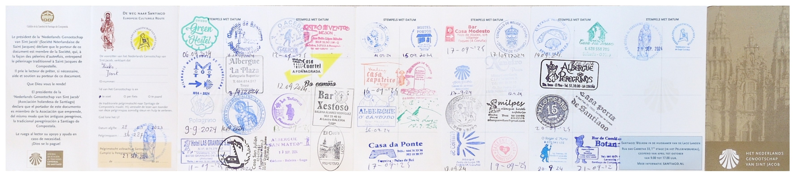
[2024-09-21]
[Camino Lavacolla 2
Santiago de Compostela]
[2024-09-20]
[Camino Santa Irene 2
Lavacolla]
[2024-09-19]
[Camino Arzúa 2 Santa
Irene]
[2024-09-18]
[Camino Melide 2 Arzúa]
[2024-09-17]
[Camino San Román da
Retorta 2 Melide]
[2024-09-16]
[Camino Lugo 2 San Román da
Retorta]
[2024-09-14]
[Camino O Cadavo 2 Lugo]
[2024-09-13]
[Camino A Fonsagrada 2 O
Cadavo]
[2024-09-12]
[Camino Castro 2 A
Fonsagrada]
[2024-09-11]
[Camino La Mesa 2 Castro]
[2024-09-10]
[Camino Pola de Allande 2 La
Mesa]
[2024-09-09]
[Camino Tineo 2 Pola de
Allande]
[2024-09-08]
[Camino Cornellana 2 Tineo]
[2024-09-07]
[Camino Oviedo 2
Cornellana]
2024 Camino del Norte
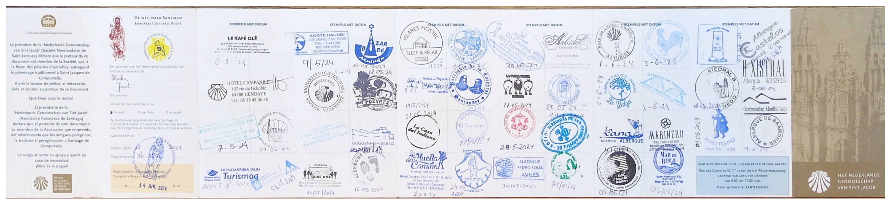
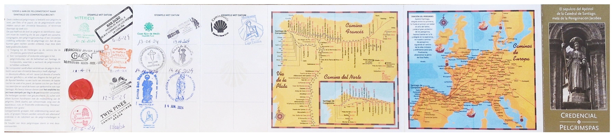
[2024-06-14]
[Camino Santiso 2
Santiago de Compostela]
[2024-06-13]
[Camino Orxal 2 Santiso]
[2024-06-12]
[Camino Sobrado dos Monxes 2
Orxal]
[2024-06-11]
[Camino A Roxica 2 Sobrado
dos Monxes]
[2024-06-10]
[Camino Baamonde 2 A
Roxica]
[2024-06-09]
[Camino As Paredes
(Castromaior) 2 Baamonde]
[2024-06-08]
[Camino Lourenza 2 As
Paredes (Castromaior)]
[2024-06-07]
[Camino Ribadeo 2 Lourenza]
[2024-06-05]
[Camino La Caridad 2
Ribadeo]
[2024-06-04]
[Camino Pinera 2 La
Caridad]
[2024-06-03]
[Camino Queruas 2 Pinera]
[2024-06-02]
[Camino Soto de Luina 2
Queruas]
[2024-06-01]
[Camino San Juan (de
Pinera) 2 Soto de Luina]
[2024-05-31]
[Camino Aviles 2 San Juan
(de Pinera)]
[2024-05-30]
[Camino Tabaza 2 Aviles]
[2024-05-28]
[Camino Barzana 2 Gijon]
[2024-05-27]
[Camino Ribadesella 2
Barzana]
[2024-05-26]
[Camino Llanes 2
Ribadesella]
[2024-05-25]
[Camino Unquera 2 Llanes]
[2024-05-24]
[Camino Comillas 2 Unquera]
[2024-05-23]
[Camino Santillana del Mar
2 Comillas]
[2024-05-22]
[Camino
Mortera-Mompia 2 Santillana del Mar]
[2024-05-20]
[Camino Guemes 2 Santander]
[2024-05-19]
[Camino Laredo 2 Guemes]
[2024-05-18]
[Camino Islaris 2 Laredo]
[2024-05-17]
[Camino Onton 2 Islaris]
[2024-05-16]
[Camino Portugalete 2
Onton]
[2024-05-15]
[Camino Bilbao 2
Portugalete]
[2024-05-13]
[Camino Muxika 2 Bilbao]
[2024-05-12]
[Camino Ziortza-Bolibar 2
Muxika]
[2024-05-11]
[Camino Ibiri 2
Ziortza-Bolibar]
[2024-05-10]
[Camino Askizu (Getaria) 2
Ibiri]
[2024-05-09]
[Camino San Sebastian 2
Askizu (Getaria)]
[2024-05-08]
[Camino Irun 2 San
Sebastian]
[2024-05-07]
[Camino Hendaye 2 Irun]
2023 Trilho dos
Pescadores / Fishermen’s Trail
[2023-10-28]
[Camino Salema 2 Lagos]
[2023-10-27]
[Camino Sagres 2 Salema]
[2023-10-26]
[Camino Vila do Bispo 2
Sagres]
[2023-10-25]
[Camino Carrapateira 2 Vila
do Bispo]
[2023-10-24]
[Camino Arrifana 2
Carrapateira]
[2023-10-23]
[Camino Aljezur 2 Arrifana]
[2023-10-22]
[Camino Odeceixe 2 Aljezur]
[2023-10-21]
[Camino Zambujeira do Mar 2
Odeceixe]
[2023-10-20]
[Camino Almograve 2
Zambujeira do Mar]
[2023-10-19]
[Camino Vila Nova de
Milfontes 2 Almograve]
[2023-10-18]
[Camino Porto Covo 2
Vila Nova de Milfontes]
2023 Camino
Portugués por la Costa (Variante Espiritual)
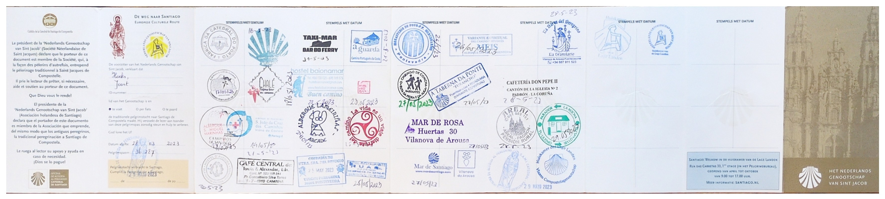
[2023-05-29]
[Camino Areal 2 Santiago
de Compostela]
[2023-05-28]
[Camino Puentecesures 2
Areal]
[2023-05-28]
[Camino
Vilanova de Arousa 2 Puentecesures (Variante Espiritual)
(barco)]
[2023-05-27]
[Camino
Armenteira 2 Vilanova de Arousa (Variante Espiritual)]
[2023-05-26]
[Camino
Pontevedra 2 Armenteira (Variante Espiritual)]
[2023-05-25]
[Camino Arcada 2
Pontevedra]
[2023-05-24]
[Camino Vigo 2 Arcada]
[2023-05-23]
[Camino Baiona 2 Vigo]
[2023-05-22]
[Camino a Guarda 2 Baiona]
[2023-05-21]
[Camino Ancora 2 a Guarda]
[2023-05-20]
[Camino Viana do Castelo 2
Ancora]
[2023-05-19]
[Camino Marinhas 2 Viana do
Castelo]
[2023-05-18]
[Camino Póvoa de Varzim 2
Marinhas]
[2023-05-17]
[Camino Angeiras 2 Póvoa de
Varzim]
[2023-05-16]
[Camino Porto 2 Angeiras]
2023 Camino Francés (bike)
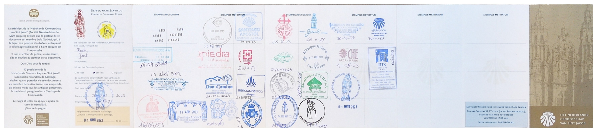
[2023-05-01]
[Camino Melide 2
Santiago de Compostela]
[2023-04-30]
[Camino Sarria 2 Melide]
[2023-04-29]
[Camino Pedrafita do
Cebreiro 2 Sarria]
[2023-04-28]
[Camino Ponferrada 2
Pedrafita do Cebreiro]
[2023-04-27]
[Camino Astorga 2
Ponferrada]
[2023-04-26]
[Camino Leon 2 Astorga]
[2023-04-24]
[Camino Sahagun 2 Leon]
[2023-04-23]
[Camino Fromista 2 Sahagun]
[2023-04-22]
[Camino Burgos 2 Fromista]
[2023-04-21]
[Camino Santo Domingo 2
Burgos]
[2023-04-20]
[Camino Logrono 2 Santo
Domingo]
[2023-04-19]
[Camino Estella / Lizarra 2
Logrono]
[2023-04-18]
[Camino Puente La
Reina 2 Estella / Lizarra]
[2023-04-17]
[Camino Pamplona 2 Puente La
Reina]
[2023-04-16]
[Camino Beintza / Labaien 2
Pamplona]
[2023-04-15]
[Camino Irun 2 Beintza /
Labaien]
[2023-04-13]
[Camino Hendaye 2 Irun]
2022 Trilho dos
Pescadores / Fishermen’s Trail (extended)
[2022-06-03]
[Camino Alfarim 2 Quinta do
Conde]
[2022-06-02]
[Camino Sesimbra 2 Alfarim]
[2022-06-01]
[Camino Setúbal 2 Sesimbra]
[2022-05-24]
[Camino Brejo de Cima 2
Setúbal]
[2022-05-23]
[Camino Vila
Nova de Santo André 2 Brejo de Cima]
[2022-05-22]
[Camino Sines 2 Vila
Nova de Santo André]
[2022-05-21]
[Camino Porto Covo 2 Sines]
[2022-05-20]
[Camino Vila Nova de
Milfontes 2 Porto Covo]
[2022-05-19]
[Camino Almograve 2
Vila Nova de Milfontes]
[2022-05-18]
[Camino Zambujeira do Mar
2 Almograve]
[2022-05-17]
[Camino Odeceixe 2
Zambujeira do Mar]
[2022-05-16]
[Camino Aljezur 2 Odeceixe]
[2022-05-15]
[Camino Arrifana 2 Aljezur]
[2022-05-14]
[Camino Carrapateira 2
Arrifana]
[2022-05-13]
[Camino Vila do Bispo 2
Carrapateira]
[2022-05-12]
[Camino Sagres 2 Vila do
Bispo]
[2022-05-11]
[Camino Hortas do Tabual 2
Sagres]
[2022-05-10]
[Camino Luz 2 Hortas do
Tabual]
[2022-05-09]
[Camino Lagos 2 Luz]
2022 Caminho Histórico /
Historical Way
[2022-05-06]
[Camino Vila do
Bispo 2 Cabo de São Vicente]
[2022-05-05]
[Camino Carrapateira 2
Vila do Bispo]
[2022-05-04]
[Camino Arrifana 2
Carrapateira]
[2022-05-03]
[Camino Aljezur 2
Arrifana]
[2022-05-02]
[Camino Odeceixe 2
Aljezur]
[2022-05-01]
[Camino S. Teotónio 2
Odeceixe]
[2022-04-30]
[Camino Odemira 2 S.
Teotónio]
[2022-04-29]
[Camino S. Luís 2 Odemira]
[2022-04-28]
[Camino Cercal do Alentejo
2 S. Luís]
[2022-04-27]
[Camino Vale Seco 2
Cercal do Alentejo]
[2022-04-26]
[Camino Santiago do Cacém
2 Vale Seco]
2019 Camino Muxia Fisterra
[2019-05-09]
[Camino Lires 2 Fisterra]
[2019-05-08]
[Camino Muxia 2 Lires]
[2019-05-07]
[Camino Olveiroa 2 Muxia]
[2019-05-06]
[Camino a Pena 2 Olveiroa]
[2019-05-05]
[Camino Santiago de
Compostela 2 a Pena]
2019
Camino Portugués Central por la Costa (Variante Espiritual)
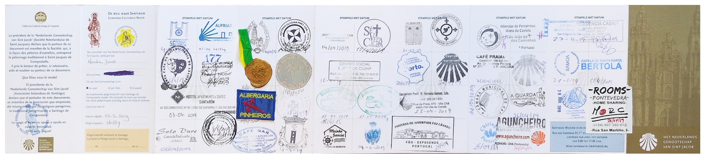
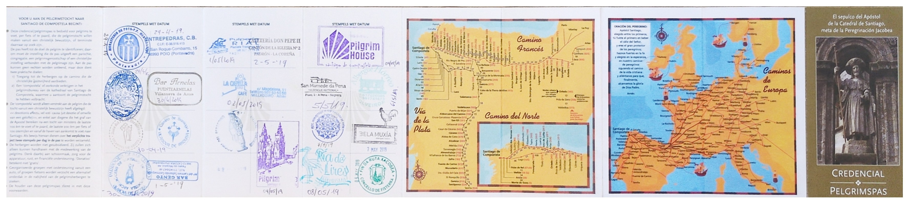
[2019-05-02]
[Camino Padron 2
Santiago de Compostela]
[2019-05-01]
[Camino
Vilanova de Arousa 2 Padron (Variante Espiritual)]
[2019-04-30]
[Camino
Armenteira 2 Vilanova de Arousa (Variante Espiritual)]
[2019-04-29]
[Camino
Pontevedra 2 Armenteira (Variante Espiritual)]
[2019-04-28]
[Camino Vigo 2 Pontevedra]
[2019-04-27]
[Camino Mougas 2 Vigo]
[2019-04-26]
[Camino Caminha 2 Mougas]
[2019-04-25]
[Camino Viana do Castelo 2
Caminha]
[2019-04-24]
[Camino Fao 2 Viana do
Castelo]
[2019-04-23]
[Camino Angeiras 2 Fao]
[2019-04-22]
[Camino Porto 2 Angeiras]
[2019-04-21]
[Camino Grijo 2 Porto]
[2019-04-20]
[Camino Sao Joao da Madeira
2 Grijo]
[2019-04-19]
[Camino
Pinheiro da Bemposta 2 Sao Joao da Madeira]
[2019-04-18]
[Camino Agueda 2 Pinheiro
da Bemposta]
[2019-04-17]
[Camino Anadia 2 Agueda]
[2019-04-16]
[Camino Coimbra 2 Anadia]
[2019-04-14]
[Camino Alvorge 2 Coimbra]
[2019-04-13]
[Camino Alvaiazere 2
Alvorge]
[2019-04-12]
[Camino Tomar 2 Alvaiazere]
[2019-04-10]
[Camino Tomar 2 Fatima]
[2019-04-09]
[Camino Golega 2 Tomar]
[2019-04-08]
[Camino Santarem 2 Golega]
[2019-04-07]
[Camino Azumbuja 2
Santarem]
[2019-04-06]
[Camino Alpriate 2
Azumbuja]
[2019-04-05]
[Camino Lisboa 2 Alpriate]
2018 Camino Portugués por la
Costa (part)
[2018-10-23]
[Camino Fao 2 Póvoa de
Varzim]
[2018-10-22]
[Camino Póvoa de Varzim 2
Fao]
[2018-10-21]
[Camino Labruge 2 Póvoa de
Varzim]
[2018-10-20]
[Camino Porto 2 Labruge]
2018 Caminho de Fátima
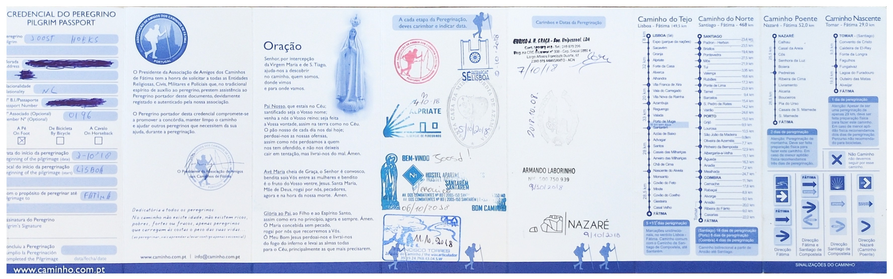 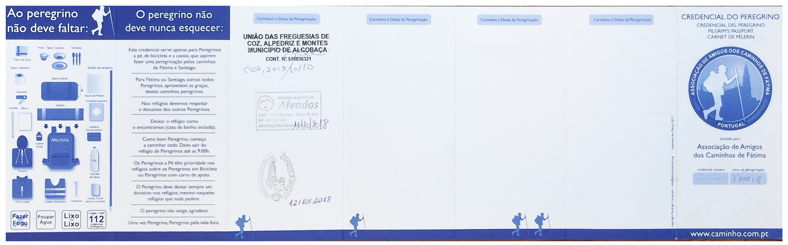 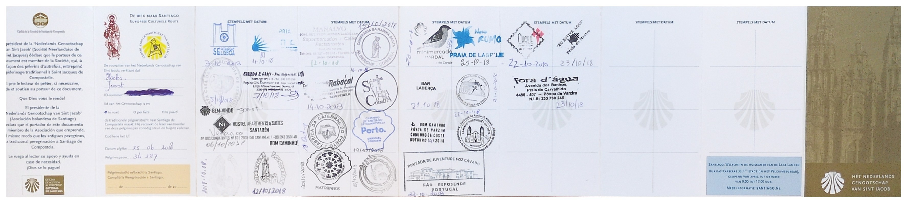
[2018-10-15]
[Camino Rabacal 2 Coimbra]
[2018-10-14]
[Camino Caxarias 2 Alvorge]
[2018-10-13]
[Camino Fatima 2 Caxarias]
[2018-10-12]
[Camino Alvados 2 Fatima]
[2018-10-11]
[Camino Coz 2 Alvados]
[2018-10-10]
[Camino Nazare 2 Coz]
[2018-10-08]
[Camino Monsanto 2 Fatima]
[2018-10-07]
[Camino Santarem 2
Monsanto]
[2018-10-06]
[Camino Azambuja 2
Santarem]
[2018-10-05]
[Camino Alpriate 2
Azambuja]
[2018-10-04]
[Camino Lisboa 2 Alpriate]
[2018-10-03]
[Camino Belem 2 Lisboa]
2018 Camino Fisterra Muxia
[2018-02-25]
[Camino Lires 2 Muxia]
[2018-02-24]
[Camino Fisterra 2 Lires]
[2018-02-23]
[Camino Cee 2 Fisterra]
[2018-02-22]
[Camino Olveiroa 2 Cee]
[2018-02-21]
[Camino Negreira 2
Olveiroa]
[2018-02-20]
[Camino Santiago de
Compostela 2 Negreira]
2018 Camino Portugués por el
Interior
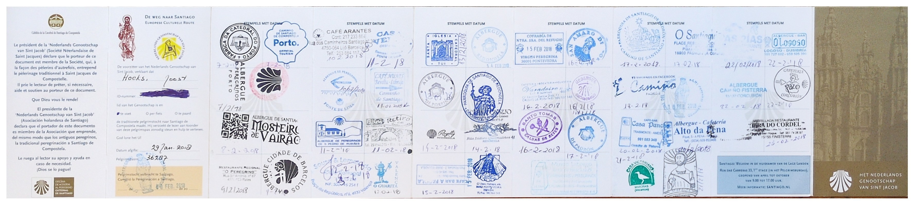 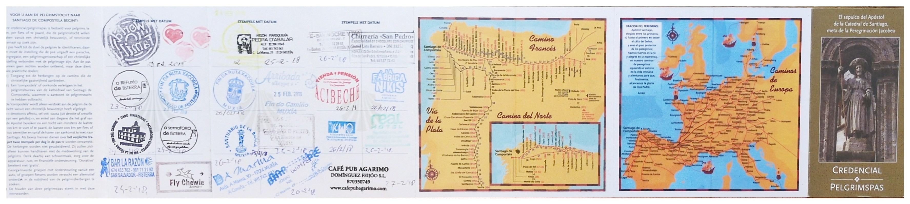
[2018-02-18]
[Camino Padron 2
Santiago de Compostela]
[2018-02-17]
[Camino Caldas de Reis 2
Padron]
[2018-02-16]
[Camino Pontevedra 2 Caldas
de Reis]
[2018-02-15]
[Camino Redondela 2
Pontevedra]
[2018-02-14]
[Camino o Porrino 2
Redondela]
[2018-02-13]
[Camino Valenca 2 o
Porrino]
[2018-02-12]
[Camino Rubiaes 2 Valenca]
[2018-02-11]
[Camino Ponte de Lima 2
Rubiaes]
[2018-02-10]
[Camino Barcelos 2 Ponte de
Lima]
[2018-02-09]
[Camino Vairao 2 Barcelos]
[2018-02-08]
[Camino Porto 2 Vairao]
2017 Camino Muxia Fisterra
(part)
[2017-09-27]
[Camino Muxia 2 Fisterra]
2017 Camino Portugués por la
Costa
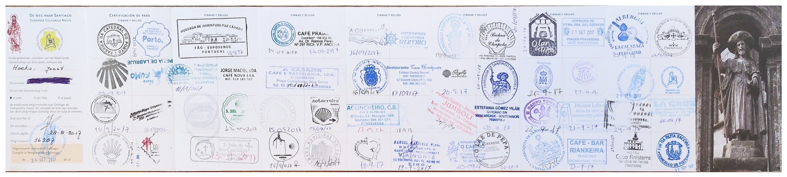 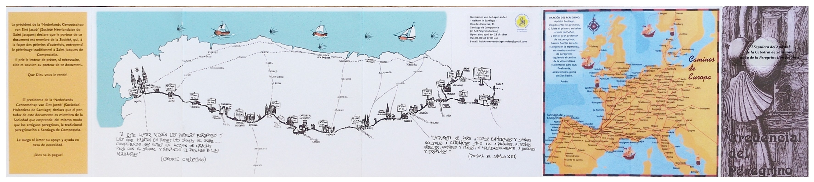
[2017-09-24]
[Camino o Faramello
2 Santiago de Compostela]
[2017-09-23]
[Camino Caldas de Reis 2 o
Faramello]
[2017-09-22]
[Camino Pontevedra 2
Caldas de Reis]
[2017-09-21]
[Camino Arcade 2
Pontevedra]
[2017-09-20]
[Camino Vigo 2 Arcade]
[2017-09-19]
[Camino Ramallosa 2 Vigo]
[2017-09-18]
[Camino Mougas 2 Ramallosa]
[2017-09-17]
[Camino a Guarda 2 Mougas]
[2017-09-16]
[Camino Caminha 2 a Guarda]
[2017-09-15]
[Camino Ancora 2 Caminha]
[2017-09-14]
[Camino Viana do Castelo 2
Ancora]
[2017-09-13]
[Camino Belinho 2 Viana do
Castelo]
[2017-09-12]
[Camino Fao 2 Belinho]
[2017-09-11]
[Camino Póvoa de Varzim 2
Fao]
[2017-09-10]
[Camino Lavra 2 Póvoa de
Varzim]
[2017-09-09]
[Camino Porto 2 Lavra]
2017 Camino Portugués por
la Costa (part)
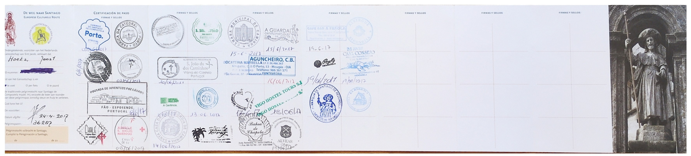
[2017-06-19]
[Camino Vigo 2 Redondela]
[2017-06-18]
[Camino Ramallosa 2 Vigo]
[2017-06-17]
[Camino Mougas 2
Ramallosa]
[2017-06-16]
[Camino a Guarda 2 Mougas]
[2017-06-15]
[Camino Caminha 2 a
Guarda]
[2017-06-14]
[Camino Ancora 2 Caminha]
[2017-06-13]
[Camino Viana do Castelo 2
Ancora]
[2017-06-10]
[Camino Marinhas 2 Viana
do Castelo]
[2017-06-09]
[Camino Fao 2 Marinhas]
[2017-06-08]
[Camino Póvoa de Varzim 2
Fao]
[2017-06-07]
[Camino Labruge 2 Póvoa de
Varzim]
[2017-06-06]
[Camino Porto 2 Labruge]
As melhores coisas da vida são de graça…
{kind=link}
{kind=link}
{kind=link}
_1.jpg){kind=link}
_1.jpg){kind=link}
_1.jpg){kind=link}
_2.jpg){kind=link}
{kind=link}
{kind=link}
{kind=link}
{kind=link}
{kind=link}
{kind=link}
{kind=link}
_1.jpg){kind=link}